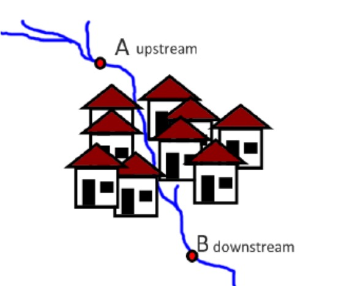
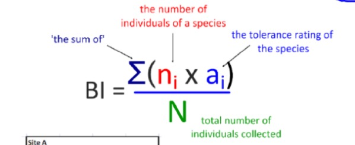
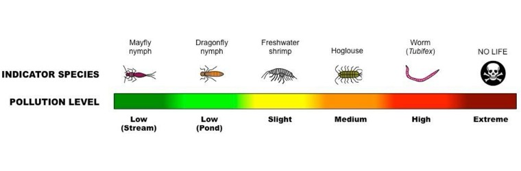

Environmental Science Approaches
Introduction
This page introduces how to use environmental science approaches to determine the source and extent of microplastics pollution.
Source
When determining the source of microplastics pollution in a water body such as a river, a transect can be set along the water body to effectively determine the spatial variation of the concentration of microplastics. Multiple samples of water collected in each quadrant in the transect will undergo chemical analysis to find the place where the concentration of microplastics starts to increase and hence find the source of the pollution.
Extent
Environmental impact assessment (EIA) should be carried out over time to compare the water body before and after microplastics enter it. Various environmental indicators such as biotic index and biodiversity index can be used to assess the impact of the pollution.
 